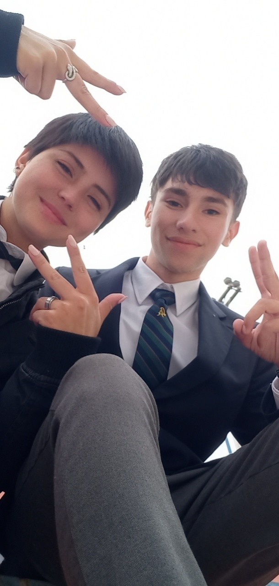
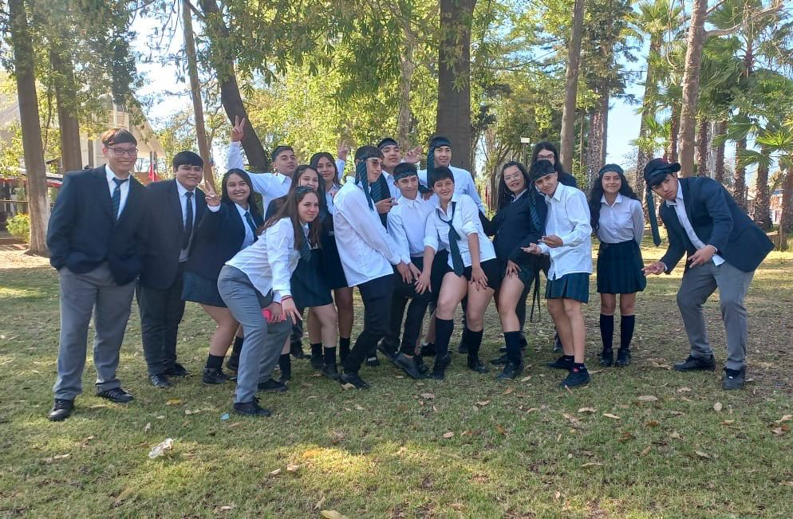
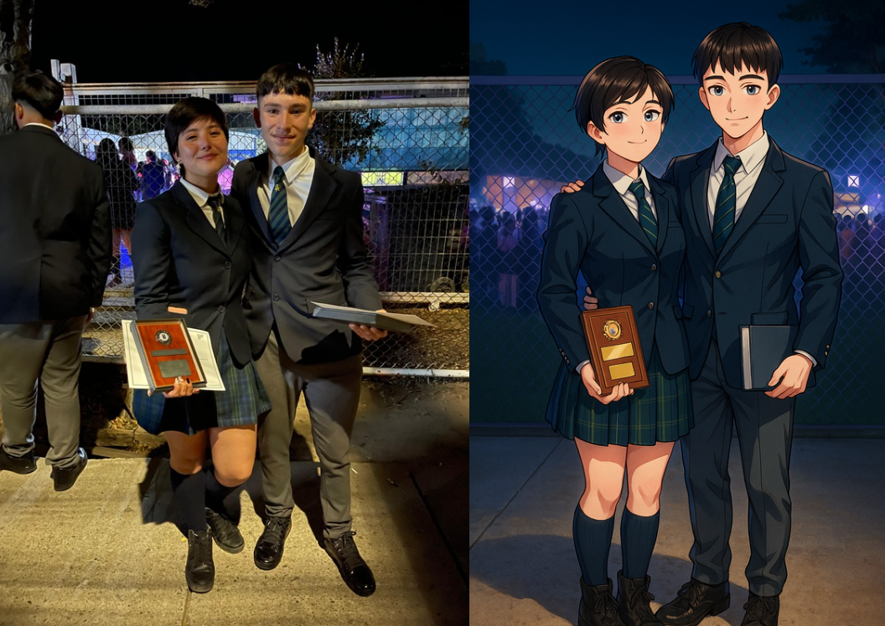
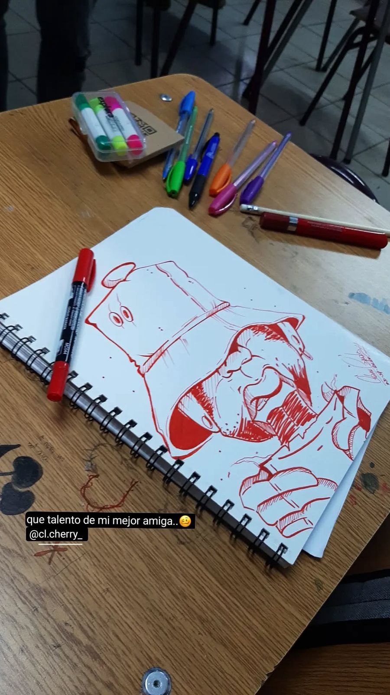
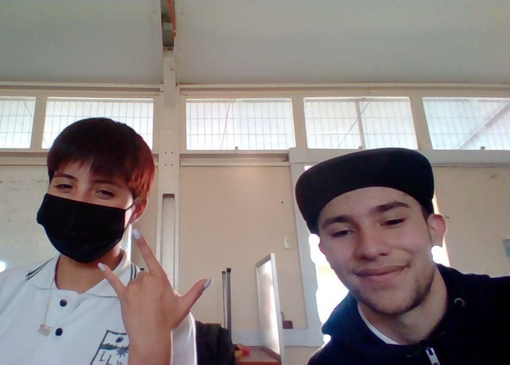

¡FELIZ CUMPLEAÑOS 21!
21 añitos, estas vieja jeje. La verdad es que no tenia pensado hacerte esta carta, porque tienes mas que sabido todo lo importante que eres para mi, pero ya sabes, soy de hacer estas ñoñerías.
Que puedo decir, nunca pensé que durante la pandemia, estando en clases virtuales y sin saber que iba a suceder, iba a terminar conociéndote, siendo mi partner de trabajos (y que terminamos siéndolo hasta el final) y ya después cuando pudimos conocernos en el liceo, teniendo todos esos momentos que siguen siendo parte importante de mi y que recuerdo con tanto aprecio. Los recreos, las conversaciones, las estupideces que hacíamos, las risas y sobre todo, la amistad que fuimos armando en ese tiempo.
Siendo sincero, no se en que momento empezamos a convertirnos en mejores amigos, quizás fue espontaneo, no recuerdo, pero literal pasábamos todo el tiempo juntos, como uña y mugre jeje. Y realmente todo ese tiempo nos fue uniendo, algo impensado, sabiendo que no teníamos el mejor pensamiento el uno del otro antes de conocernos, pero entre toda la gente doble cara que había alrededor, que te demostraba amistad un día y te desconocían al otro, tu siempre estuviste ahí, sin importar nada, demostraste una lealtad que nunca vi en alguien y asi te ganaste mi cariño, mi protección y mi hermandad, porque si, tienes un hermano para toda la vida.
Nunca entendí porque había gente que le caías mal (ya sabes a quienes me refiero), siempre que estuve contigo, fuiste alguien con una sonrisa de oreja a oreja, que me escuchaba cada vez que te necesitaba, que demostrabas tener talento en todo, una chica inteligente y bellísima que lograbas opacar a cualquiera que estuviera a tu lado, las dejabas chicas a todas, incluidas a las que hablaban mal de ti. Siempre quisieron meterme en la cabeza tantas cosas malas de ti, pero aquí sigues demostrándome lo equivocadas que estaban todas esas personas, y sin importar lo que me digan, seguiré defendiéndote a capa y espada, porque jamás me arrepentiré de haberte dado la confianza de ser mi amiga y ser la única amistad que quiero hasta el final de mis días.
Ese día es de mis favoritos, ya nos quedaba super poquito y teníamos que sacarnos la foto del cuadro, y no se nos ocurrió mejor idea que cambiar tu falda por mi pantalón, MI MACHO INTERIOR DESAPARECIO DESDE ESE DIA CELINE JAJAJA. Yo con lo flaquito que soy, sigo preguntándome como te quedo bien el pantalón, si te cerro justo, poco mas y se rajaba. Aunque algunos sobren en esa foto (y teníamos fotos solos los dos juntos pero las perdí) ahí estuviste conmigo, uno al lado del otro, porque ya nada nos podía separar esos últimos días, no sabia si íbamos a seguir manteniendo esa unión después de salir, pero aproveche cada momento en el que podíamos hacer cualquier cosa para tener los recuerdos en mi memoria y jamás olvidarlos.
Bueno, supongo que esto lo veras después de haberte dado el regalo, y no se si te diste cuenta aun, pero el cuadro es una interpretación de mi foto favorita juntos (que la hizo mi amigo intimo, ChatGPT jeje), en nuestra licenciatura, de ahi en adelante ya no nos veriamos todos los dias, no nos veriamos esos dias tan helados en los que llevaba el tecito con quix y mas te lo tomabas tu que yo, las veces que jugabamos voleibol y eras demasiado mala pero debia tenerte en mi equipo, no podia enfrentarme contigo porque lo veia casi como un pecado, aunque creo que mas de alguna vez nos enfrentamos (y ganaba yo, obvio), ya no habria conversaciones en la que nos desahogabamos, nos contabamos nuestras cosas y temas mas intimos, y nos entendiamos tan bien que sabiamos que hacer para que el otro estuviera mejor, todo eso, ya no seria lo mismo que antes, pero creeme que la felicidad de haber salido con esa amiga con la que comparti cada dia, no me la quita nadie.
Uy, lo bellos que nos veiamos ese dia, pura elegancia. Si te fijas, nos veiamos felices, webiando en esa cosa que giraba, para poder recordar nuestra gala, y toda esa felicidad de la que te hablo demuestra lo vivido en nuestra adolescencia, dos jovenes que tenian muchas metas por cumplir, sueños por alcanzar y logros por presumir. Y ahi me di cuenta que estarias para siempre, por que ya no estabamos con el uniforme del liceo, estabamos disfrutando la ultima actividad como compañeros, y no dudaste en tener ese recuerdo conmigo, y lo volveria a vivir mil veces mas.
Y aqui sigues, siendo tan o mucho mas importante como antes, siendo esa amiga incondicional que jamas me dejo solo, que me acompaño en cada paso que he dado, y pienso hacer lo mismo contigo y darte todo lo que mereces como mi mejor amiga, de la cual te apoyare en cada plan o sueño que tengas en mente, ya que nunca he dudado de tus cualidades (puedo presumir de eso con la imagen de arriba, siempre lo he pensado). Creeme que llegaras lejisimos y pienso estar ahi para ser el primero en alegrarme por tus logros, si quieres seguir siendo tatuadora, pon todo de ti para ser la mejor, no aspires a menos que eso, y si las cosas no salen como piensas, tendras todo mi animo para poder salir adelante y proponerte mil cosas mas, que se que serias la mejor en todas. Nunca dejes de soñar y aspirar a tenerlo todo por que se que tarde o temprano, lo lograras.
Fijate que mas que una carta de cumpleaños, es una carta de agracedimiento de mi para ti, gracias por tu amistad, gracias por tu confianza, por tu tiempo, por cada recuerdo contigo, por cada dia que has estado para mi, por tu cariño, por sacarme una sonrisa sin importar como estuviera, y por sobre todas las cosas, gracias por siempre ser tu misma, una persona maravillosa y que todas las personas del mundo merecerian tener en su vida, pero yo tengo la fortuna de decir que eres mi mejor amiga, mi hermana, mi persona de confianza, mi "todo". Espero de corazon, estar para ti siempre que lo necesites, pero siempre, que si un dia sientes que todo se te viene abajo, yo seria el primero en querer verte mejor y feliz, como siempre lo has sido. Tambien deseo lo mejor para ti en todo lo que venga, especialmente ahora que te vas a casar y prometo estar ahi para ti, ahora estando jovenes y hasta cuando estemos viejos, canosos y sin energias, pero con nuestra amistad mas fuerte que nunca y tan especial como siempre.
Felices 21, que cumplas muchisimos mas pinche vieja, te quiero un monton.